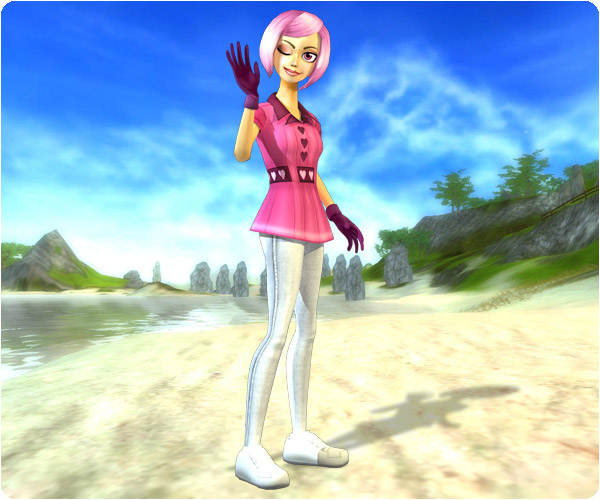

Hello!
Valentine's Day is coming up and the people of Jorvik feel that it's time to tell their certain someone how they feel...
New Quests:
It's time for Valentine's Day! Talk to Derek, the postman in Silverglade Village and see if he needs any help with all the love letters!

New clothes:
New t-shirts have arrived to the clothing store in Silverglades Equestrian Center!
Horse Food:
You can now feed clementines to your horse. The clementines are good and nutritious for your horse!